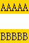

BX3019: Chrome Safari 中设置了 'bordercolor' 属性的 TABLE 元素，会为其自动设置3px的边框宽度
作者：段立新
标准参考
无
问题描述
给 TABLE 设置 'bordercolor' ，同时若没有对 'border-width' 设置值，Chrome Safari 会为其自动设置 3px 的边框宽度。
造成的影响
此现象导致 Chrome Safari 下与其他浏览器表现不一致。
受影响的浏览器
| Chrome Safari |
|---|
问题分析
'bordercolor' 并不是 W3C 规范中的属性，但所有主流浏览器均支持，其相当于 CSS 中的 'border-color' 。而Chrome和Safari在遇到 'bordercolor' 属性时，若没有为 TABLE元 素设置 'border' 属性或者 'border-width' 样式，则会自动为 TABLE 添加 3px 的边框宽度。
分析以下代码：
<table bordercolor="red">
<tr>
<td style="background:gold;">AAAAA</td>
</tr>
</table>
<br />
<table bordercolor="blue" style="border-width:0;">
<tr>
<td style="background:gold;">BBBBB</td>
</tr>
</table>
代码中两个 TABLE 均设置了bordercolor 属性，第二个TABLE 比第一个多了 border-width:0。
各浏览器表现如下：
| Chrome Safari | IE6 IE7 IE8 Firefox Opera |
|---|---|
 |
 |
 |
 |
解决方案
避免给 TABLE 设置 'bordercolor' ，使用 CSS 中 'border' 实现其效果，保证各浏览器兼容。
参见
知识库
相关问题
测试环境
| 操作系统版本: | Windows 7 Ultimate build 7600 |
|---|---|
| 浏览器版本: | IE6 IE7 IE8 Firefox 3.6 Chrome 4.0.302.3 dev Safari 4.0.4 Opera 10.60 |
| 测试页面: | TABLE_bordercolor.html |
| 本文更新时间: | 2010-07-22 |
关键字
bordercolor border-width border 3px